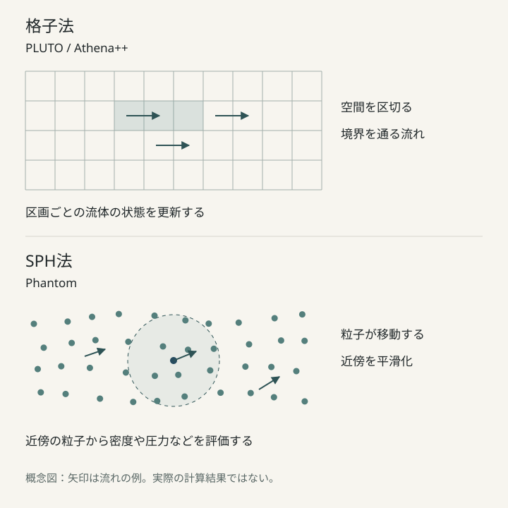

天体の周囲や星間空間にあるガスは、必ずしも静かに漂っているわけではない。速さの異なる流れがぶつかれば衝撃波が生まれ、密度の高い層が形成される。流れの境界では不安定性が発達し、複雑な渦や乱流が現れることもある。磁場が加われば、ガスの運動はさらに多彩になる。
こうした現象の時間発展を調べる一つの方法が、数値流体シミュレーションである。質量・運動量・エネルギーの保存則などを計算機で解き、密度、温度、速度、磁場が時間とともにどう変わるかを追跡する。天体物理学では、そのための本格的なコードが研究者向けに公開されている。ここでは、計算方法の異なる三つの代表的なコードを紹介する。
二つの計算方法――格子法と粒子法
格子法は、計算する空間を多数の小さな区画に分け、各区画の流体の状態と、区画の境界を通る流れを計算する方法である。衝撃波の位置や密度の変化を追跡するのに適しており、必要な場所の格子を細かくする適応格子細分化（AMR）を使えるコードもある。
一方、SPH（Smoothed Particle Hydrodynamics、平滑化粒子流体力学）法では、流体を粒子の集まりとして表し、近傍の粒子を使って密度や圧力などを評価する。粒子は流れとともに移動するため、複雑に変形する三次元のガス分布を扱う場合などに特徴がある。どちらにも得意な問題と注意すべき数値誤差があり、万能な方法というわけではない。

PLUTO――幅広い現象を扱う格子型コード
PLUTO は、天体物理学の流体・プラズマ計算のために開発された公開コードである。通常の流体力学（HD）だけでなく、磁場を含む磁気流体力学（MHD）、特殊相対論的な流体・磁気流体も扱える。一次元から三次元までに対応し、直交・円筒・球座標系などを選択できる。
有限体積法などに基づくGodunov型の衝撃波捕獲法を採用し、衝撃波、ジェット、爆風、流体不安定性などを計算できる。粘性、熱伝導、放射冷却といった物理過程を組み合わせる機能もあるが、使用できる機能は公開版と設定によって異なる。格子を局所的に細かくするAMRや、MPIによる並列計算にも対応する。
比較的単純な問題から取り組みたい場合には、付属するテスト問題が手がかりになる。衝撃波管問題や爆風問題などは、計算結果を既知の解と照らし合わせるための基本的な例である。標準的なCPU版とは別に、GPU計算に対応した gPLUTO も開発されている。
Athena++――柔軟な格子配置と日本語の学習資料
Athena++ は、天体物理学の流体・磁気流体シミュレーションを目的とするC++製コードである。一次元から三次元の計算が可能で、直交・円筒・球座標などの座標系に加え、AMRによって空間分解能を必要な場所に集中させられる。MPIやOpenMPによる並列化に対応し、メトリックを固定した一般相対論的磁気流体力学を扱う機能も備える。
特徴の一つは、日本語で読める解説・実習資料が公開されていることだ。東北大学のAthena++日本語ドキュメント には、導入方法のほか、一次元の衝撃波管問題、二次元の磁気流体計算、三次元計算、格子細分化などのチュートリアルが整理されている。数値流体力学を実際のコードと結び付けて学ぶ入口にもなる。
公式資料：GitHubリポジトリ／日本語チュートリアル
Phantom――粒子で三次元の流れを追う
Phantom は、格子法とは異なるSPH法を中心に据えた、三次元の天体流体・磁気流体シミュレーションコードである。現代的なFortranで書かれ、自己重力、磁場、ダスト、連星系や降着円盤などのモデルに対応する。流体を構成する粒子が動くため、流れに伴って形を変えるガスの分布を追跡するのが特徴だ。
公式のサンプル問題集 には、降着円盤、乱流、連星、自己重力、ダストなど、多様な設定がある。恒星風とダスト形成のチュートリアル では、粒子の供給や物理パラメータの設定を具体的に確認できる。なお、SPH法でも空間分解能や数値的な粘性の扱いなどを慎重に検証する必要がある。
公式資料：ドキュメント／GitHubリポジトリ
三つのコードを見比べる
| コード | 主な計算方法 | 特徴 | 入口となる資料 |
|---|---|---|---|
| PLUTO | 格子法 | HD・MHD・相対論的流体、豊富なテスト問題 | 公式ドキュメント・テスト問題 |
| Athena++ | 格子法 | 柔軟な格子配置、AMR、並列計算、日本語教材 | 日本語チュートリアル |
| Phantom | SPH粒子法 | 三次元のガス流、自己重力、ダストなど | 公式サンプル問題集 |
最初に確認したいこと
これらは大規模な計算機でも使われる研究用コードだが、すべての計算にスーパーコンピューターが必要なわけではない。単純な一次元の衝撃波問題や小規模な二次元計算なら、一般的な研究用PCで試せる場合もある。ただし、三次元の高解像度計算や複数の物理過程を組み合わせた問題では、必要なメモリと計算時間が大きく増える。
公開コードを使う利点は、数値アルゴリズムを最初からすべて自作せずに、物理モデルの構築へ進めることにある。ただし、初期条件、境界条件、方程式や物理過程の選択は利用者の責任である。計算結果がもっともらしい画像になったとしても、保存則、格子幅・粒子数への依存性、基準問題との一致を検証しなければならない。コードを動かせることと、計算結果を科学的に信頼できることは、同じではない。
情報確認：2026年11月8日。機能、配布条件、利用可能なモジュールは更新されることがあるため、最新情報は各公式サイトで確認してください。